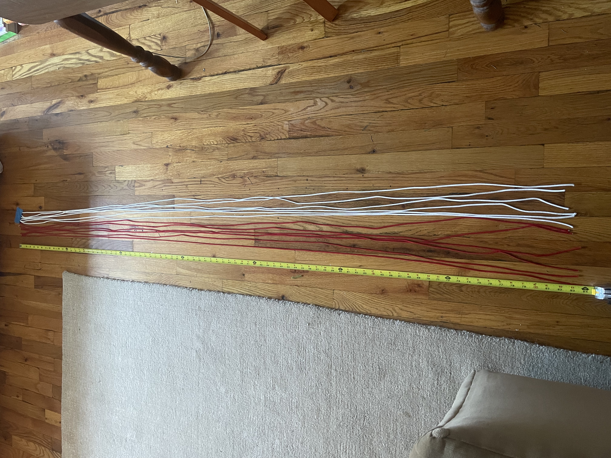
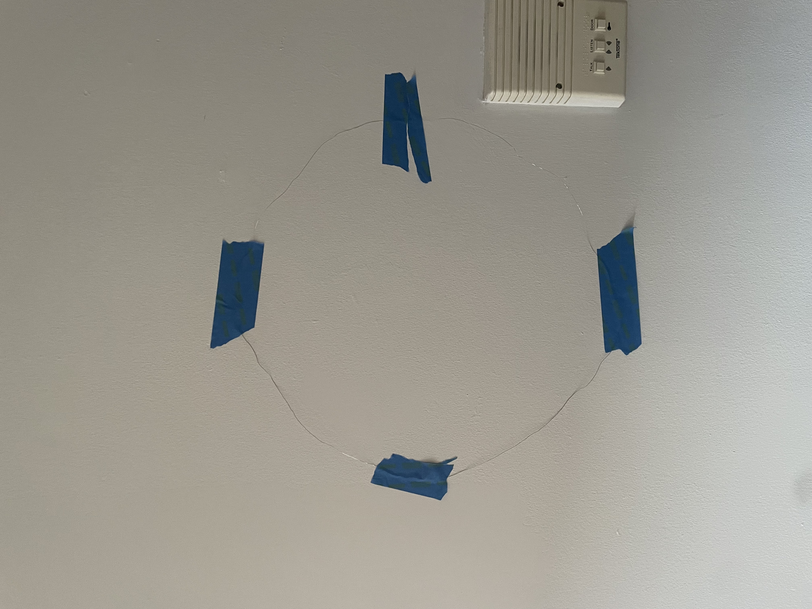
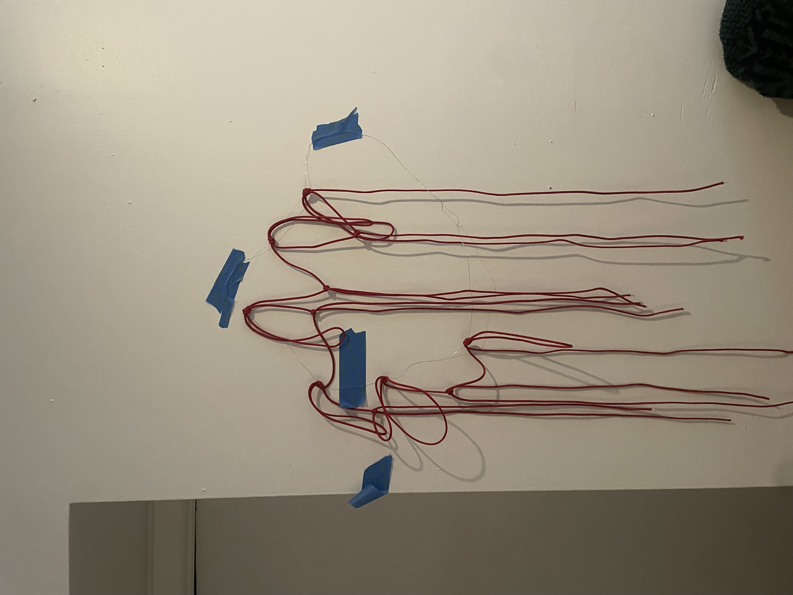

Laws to ban transgender youth from participating in sports have been introduced and passed across the United States in the last few years. Under such bans, transgender people are barred from participating on sports teams and in leagues that align with their gender identity. These bills seek to codify harmful gender definitions under the guise of fairness.
The goal of my project is to understand the legislative activity of bans on transgender youth activity in sports across the US. Since 2020, 62 bills targeting athletics in K-12 and higher education have been introduced or passed in 25 states and the national legislatures.
What the law making and data collection cycle have in common is a certain sterility toward their subjects. The processes therein abstract the tangible elements, the human impact. These two factors inspired the idea to create a data object. I wanted to deliberately consider and make material what it means when we talk about the various statistics about anti trans laws.
Two legislative tracking projects, Trans Legislation Tracker and the Movement Advancement Project, serve as the sources for my dataset. Both platforms create data visualizations and charts, but neither provide exports.
Unable to obtain an underlying csv file of either project’s data, I went to work transposing the data from their sites into one dataset in Google sheets.
The dataset comprises legislative activity at the state and federal level from 2020-2024, indicating where laws or regulations have passed banning the participation of trans youth in sports. The variables are as follows:
Since 2020, 29 bills have been passed in states across the US.
The first law was passed in Idaho and more states followed shortly after. At the time of writing this post, there are bans in place in 25 states in the country.
The basketball nets serve as a thematic data object, and crafting them afforded me the opportunity to reflect on the data. The net on the left was made with 6 red strings, representing the 50% of states with a youth sports ban, and 6 white strings, representing the 50% without. The net on the right represents the language used in bill titles that specifically mention women or girls. Blue strings represent the use of "fairness," yellow "protection," and red "save."
I knew I wanted to make a data object for my final project after the data physicalization workshop. When thinking about textiles and doing our own weaving, I had the idea that sports nets would be something you could make using similar principles. With an object in mind, I then considered what subjects could fit thematically with sports nets.
I went where every visual learner goes when they need a demonstration: YouTube. I replayed one video, starting and stopping, understanding where to fold, loop, and tug the paracord to create a basketball net.
First, I cut 12 pieces of paracord, each measuring 7 feet.
The next steps required some middle school math. In order to mimic tying the net around a hoop, I cut wire to the length of the circumference of a standard rim. I then needed to make sure the knots would be spaced evenly so the net would stretch around the entire circumference of the rim.
With the paracord cut and wire molded into a hoop, I began constructing the net. I folded each piece of paracord in half, tying a knot around the hoop so that there were two resulting strands from each knot. I did this for each of the 12 pieces, resulting in 24 total strands.
From there, I tied the right most and left most strands from each adjacent knot together with a bull hitch knot. Continuing until each strand was joined with another, I made the first row of the net. I repeated this step until the net was a little longer than 18 inches. This would allow for the net to be tied onto a hoop and still land at regulation length, which was also 18 inches.
  The process of constructing one net from start to finish.
These anti trans laws constitute an alarming trend. Such coordinated attacks on the human rights of transgender people and efforts to define rigid gender binaries in states will continue. The states indicated on the map above illustrate where other anti trans bills already exist or where more will crop up.